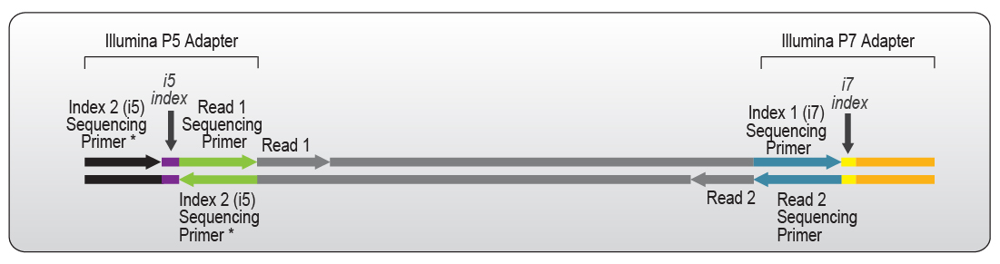

ATAC-seq / Chip-seq Workshop
Kerry Cobb
Objectives
- Understand the principles behind ATAC-seq and ChIP-seq
- Learn about experimental workflow for ATAC-seq and ChIP-seq
- Gain familiarity with data analysis tools for ATAC-seq and ChIP-seq
- Have an example of for project organization
- Understand principles of HPC usage
- Gain experience with Linux command line
Format of Workshop
- Largely cookbook style
- Some hands-on exercises
- Learn principles behind methods
- Please interrupt if you have questions!
Why use ATAC-seq / ChIP-seq?
- Understand gene regulation
Gene Regulation
- Transcription Regulation
- When and how much a gene is transcribed
- Translation Regulation
- When and how much mRNA is translated into protein
- Post-translation Regulation
- Activation, inactivation, and degradation of proteins
Regulation of Transcription
- How genes are turned on or off in different cells and conditions
- Involves interactions between DNA, RNA, and proteins
- Key players:
- Epigenetic modifications
- Chromatin structure
- Transcription factors
Epeigenetic Modifications
Chromatin Structure
- Chromatin: The complex of DNA and proteins (mainly histones) that make up chromosomes
Jeffrey Hansen
Transcription Factors
Transcription factors
- A protein that binds to specific DNA sequences to regulate the transcription of genetic information from DNA to messenger RNA
- Contains at least one DNA-binding domain (DBD) that recognizes specific DNA sequences adjacent to the genes they regulate
- Types
- Activator - A transcription factor binding to an enhancer
- Repressor - A transcription factor binding to a silencer
- Coactivator - A protein that binds to an activator and helps to increase transcription
- 2,800 proteins in human genome have DNA binding domains!
Focus of Workshop
- DNA Accessibility
- Primarily studied using ATAC-seq
- ChIP-seq targeting H3K27ac
- Epigenetic modification marking active gene regulatory regions
- Transcription Factor Binding
- Primarily studied using ChIP-seq
- Bound transcription factors leave signature in ATAC-seq data as well
ATAC-seq
- Assay for Transposase-Accessible Chromatin
ATAC-seq
ATAC-seq
Illumina Sequencing
Illumina Sequencing

ATAC-seq
ATAC-seq - Footprinting

ChIP-seq - Chromatin Immunoprecipitation Sequencing
CUT&RUN - Cleavage under targets and release using nuclease
- Requires less starting material
- Faster protocol
- No cross-linking step
- Decreases false positives
- Less sensitive
CUT&TAG - Cleavage under targets and tagmentation
- Fastest
- May not work on some targets
Peaks
- These methods result in enrichment of DNA from specific genome regions
- These enriched regions are called “peaks”
- Peaks correspond to regions of interest
- Transcription factor binding sites / histone modifications
- Open chromatin regions
- Most software tools for identifying these peaks work with any data source
- Parameters specific to one assay may be needed
Shared Analytical Workflow
- Quality Control
- Read Trimming and Filtering
- Read Alignment
- Peak Calling
- Downstream Analysis
Dataset
- Lindeman et al. 2021
- The conserved sex regulator DMRT1 recruits SOX9 in sexual cell fate reprogramming
- ATAC-seq and ChIP-seq data from mouse embryonic gonad tissue
- Gonad differentiation involves major chromatin remodeling
- DMRT1 is key transcription factor in remodelling
- Enables binding of SOX9
Logging in to the HPC
Git Repository
All of the code and data for this workshop is available on GitHub.
You can clone the repository to your home directory on the HPC using the following command:
Data Download
- NCBI Sequence Read Archive (SRA)
- https://www.ncbi.nlm.nih.gov/bioproject/PRJNA646465/
- Use SRA Toolkit to download NCBI SRA data
- See:
dmrt/atac-seq/scripts/00_download.shdmrt/chip-seq/scripts/00_download.sh
- Obtained metadata from run selector
FASTQ Format
- Typical raw data format for sequencing reads
- Typically separated into two files
- One for each end of a read, if paired
- Each read is represented by four lines:
- Header (starts with ‘@’)
- Sequence (the actual nucleotide sequence)
- Separator (starts with ‘+’)
- Quality score (ASCII-encoded quality scores for each nucleotide)
- Example:
@SEQUENCE_ID
GATTTGGGGTTTAAAGGGTGACCTGGTAGG
+
!''*((((***+))%%%++)(****)())-+**--1FASTQ Format - Quality Scores
- Quality scores are encoded using ASCII characters
- Each character represents a 2 digit quality score for the corresponding nucleotide
- This permits more efficient storage
- The quality score is a measure of the confidence in the accuracy of the base call
- The higher the quality score, the more reliable the base call
- Calculated as
-10 * log10(P)wherePis the probability of an incorrect base call - Examples:
- Q = 10, P = 0.1 (10% chance of error)
- Q = 30, P = 0.001 (0.1% chance of error)
FASTQ Format - Headers
- The header line contains metadata about the read
- Illumina headers typicallly look like this:
@HWUSI-EAS100R:6:73:941:1973#0/1The components of the header are:
- HWUSI-EAS100R: the unique instrument name
- 6: flowcell lane
- 73: tile number within the flowcell lane
- 941: ‘x’-coordinate of the cluster within the tile
- 1973: ‘y’-coordinate of the cluster within the tile
- #0: index number for a multiplexed sample (0 for no indexing)
- /1: the member of a pair, /1 or /2
Quality Control
- Quality of reads
- Quantify of reads
- Adapter Contamination
Adapter Contamination
Can occur if insert size is too short

Fastqc
- Evaluates several metrics for a FASTQ file
- Provides a summary of the quality of the reads
- Generates an HTML report with visualizations and statistics
- Can be run with the command:
Multiqc
- Consolidates multiple reports from FastQC and other tools
- Generates a single HTML report with visualizations and statistics
- Useful for comparing multiple samples or conditions
Filtering and Trimming
- Remove low-quality reads
- Remove adapter sequences
- Many tools:
- Trimmomatic
- Trim Galore
- Fastp
- Atria*

Mapping & Alignment
- Determine where each read originated from in the genome
- Align reads to a reference genome
- Common tools:
- Bowtie2
- STAR
- BWA

Mapping & Alignment - Reference Genome
- Representative sequence of a species’ genome
- Arguably a poor representation due to genetic variation
- Genome Reference Consortium (GRC)
- Produces high-quality reference genome assemblies
- Human: GRCh38 (hg38)
- Mouse: GRCm39 (mm39)
- Available from:
- Providers use slightly different naming conventions for chromosomes
- Important to be consistent throughout analysis
Reference Genome Index
- Data structure for quickly finding short nucleotide sequences in a large reference genome
- Two main types used in read mapping:
- FM Index (BWA, Bowtie2)
- Suffix Array (STAR)
- Must be built before mapping reads
SAM/Bam file formats
- Output is a SAM file
- SAM (Sequence Alignment/Map) is a text format for storing aligned reads
- It contains information about the alignment of each read to the reference genome
- SAM files are human-readable, but can be large
- They can be compressed to BAM format for storage and efficiency
- They are compressed and indexed for efficient access
- Not human-readable
- SAM/BAM files can be viewed with tools like IGV or samtools
- They are used for downstream analyses like peak calling
SAM/Bam file formats
- Example SAM file:
@HD VN:1.0 SO:unsorted
@SQ SN:chr1 LN:248956422
@RG ID:group1 SM:sample1
@PG ID:program1 PN:STAR VN:2.7.9a
read1 0 chr1 100 60 10M1I5M2D3M * 0 0 ACGTACGTAC IIIIIIIIIIIIIIIIIIII AS:i:10 NM:i:1| Col | Field | Type | Brief description |
|---|---|---|---|
| 1 | QNAME | String | Query template NAME |
| 2 | FLAG | Int | bitwise FLAG |
| 3 | RNAME | String | References sequence NAME |
| 4 | POS | Int | 1-based leftmost mapping POSition |
| 5 | MAPQ | Int | MAPping Quality |
| 6 | CIGAR | String | CIGAR string |
| 7 | RNEXT | String | Ref. name of the mate/next read |
| 8 | PNEXT | Int | Position of the mate/next read |
| 9 | TLEN | Int | observed Template LENgth |
| 10 | SEQ | String | segment SEQuence |
| 11 | QUAL | String | ASCII of Phred-scaled base QUALity+33 |
CIGAR String
- CIGAR (Compact Idiosyncratic Gapped Alignment Report) string is a part of the SAM/BAM format
- It describes how the read aligns to the reference genome
- It consists of a series of operations, each represented by a character and a number
- Common operations include:
- M: match or mismatch
- I: insertion
- D: deletion
- N: skipped region (intron)
- S: soft clipping (part of the read is not aligned)
- Example CIGAR string:
10M1I5M2D3M- This means 10 matches, 1 insertion, 5 matches, 2 deletions, and 3 matches
SAM/Bam file formats
Example SAM file:
@HD VN:1.0 SO:unsorted
@SQ SN:chr1 LN:248956422
@RG ID:group1 SM:sample1
@PG ID:program1 PN:STAR VN:2.7.9a
read1 0 chr1 100 60 10M1I5M2D3M * 0 0 ACGTACGTAC IIIIIIIIIIIIIIIIIIII AS:i:10 NM:i:1
Optional fields:
- AS:i:10 - Alignment Score
- NM:i:1 - Number of Mismatches
Mapping QC
- Assess quality of alignments
- Common metrics:
- Mapping rate
- Coverage
- Duplicate reads
- Orientation (for paired-end reads)
- Mapping quality
- Tools:
- Qualimap
- Picard Tools
- samtools